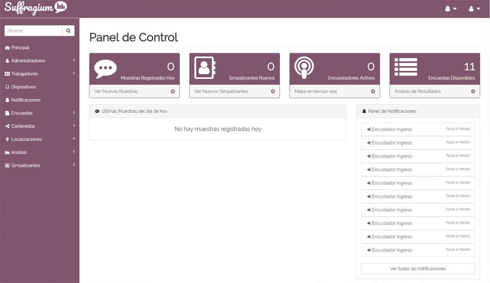
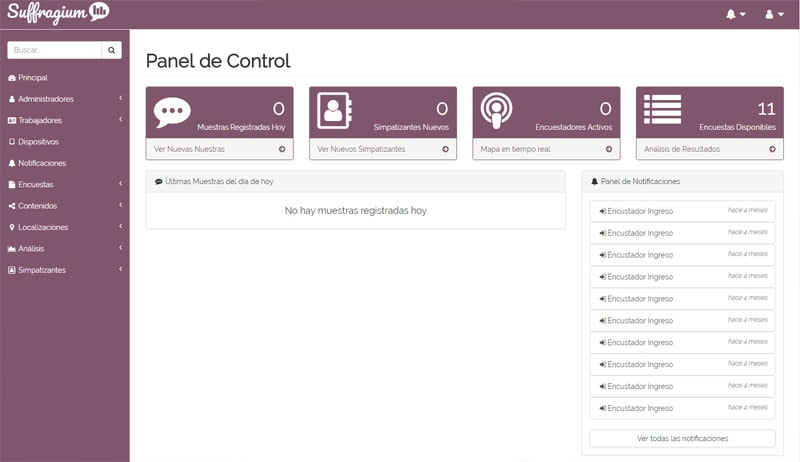
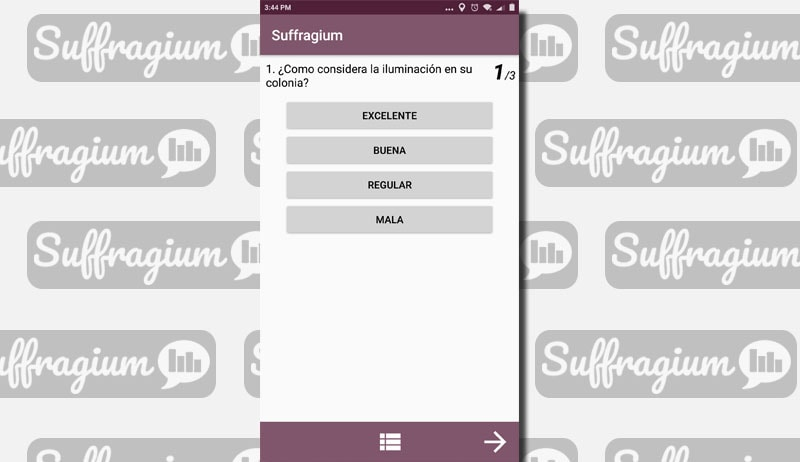
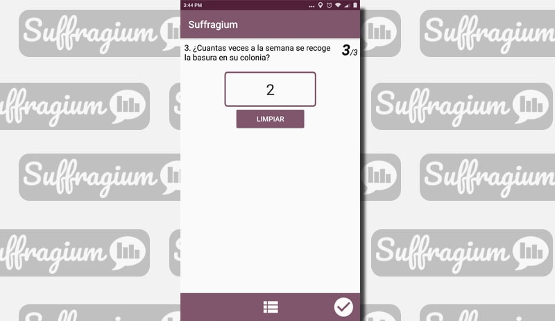
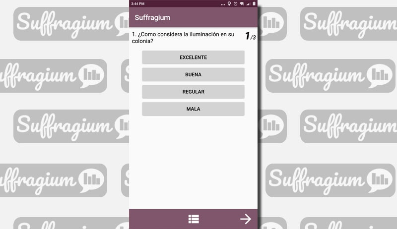
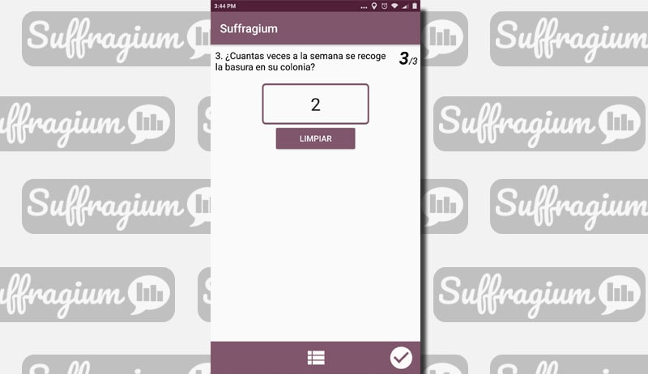

Sistema de Encuestas
Suffragium es un sistema creado para realización de encuestas, integrando el uso de dispositivos móviles para la toma de muestras combinado con potentes herramientas de análisis y control para facilitar los procesos y obtener los mejores resultados.
Además se incluye un control de trabajadores para poder realizar auditorías, con características como la grabación de voz, limitación del área de trabajo a través del GPS, verificación de la ruta seguida, lugar donde fueron tomadas las muestras, etc.
-
aplicación web, con funciones como:
- dar de alta trabajadores y administradores;
- crear encuestas con preguntas de distintos tipos, selección, abiertas, imágenes;
- mapas con áreas de trabajo en las cuales deben desempeñarse los encuestadores;
- consulta de audios correspondiente a cada muestra tomada para auditoria;
- mapa con la ubicación de los encuestadores en tiempo real y rastreo de su ruta;
- consulta de cada muestra individual, con sus respuestas audio y ubicación;
- visualizador de reportes en forma de gráficas, con opciones para personalizar el tipo de la gráfica, color, entre otros aspectos;
- generador de consultas personalizadas para obtener datos filtrados por zonas geográficas, preguntas específicas, etc;
- historial de acciones realizadas en el sistema;
-
aplicación móvil para Android, con funciones que incluyen:
- administración de las tareas asignadas al trabajador;
- captura de encuestas, incluyendo grabación del audio;
- mapa con el área en la que se deben recopilar las muestras;
- utilización de GPS para verificar que se recopilan muestras en el área asignada;
Explicación Técnica
Aplicación Web


Aplicación Web
- Aplicación Web Laravel
- Sirve para 2 propósitos:
- como API para la aplicación móvil,
- como panel de administrador.
- Utilización de Vue.js en el front end para distintas aplicaciones.
- Integración con Google Maps API para dibujar y almacenar polígonos y ubicaciones.
- Servicios REST para comunicación con la aplicación móvil.
- Base de datos en MySQL.
- Aplicación nativa desarrollada con Android Studio
- Comunicación con el servidor a través de REST con la librería Retrofit.
- Integración con SQL Lite para almacenar datos de las muestras tomadas.
- Utilización de GPS para mantener control de ubicación y tracking en tiempo real/ruta seguida.
- Integración con Google Maps.
Imagenes del Proyecto:
 



 


